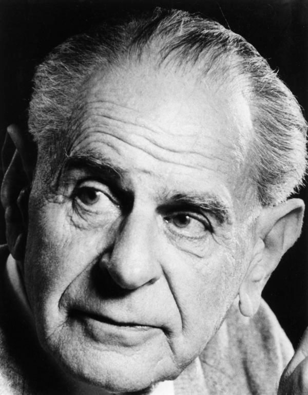
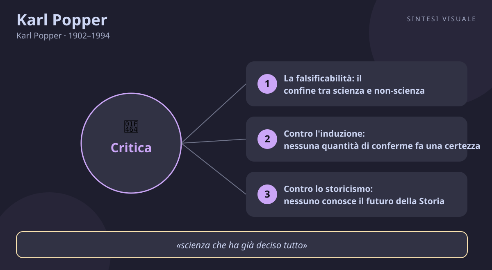

Karl Popper
Karl Popper · 1902–1994
«La tolleranza illimitata porta alla scomparsa della tolleranza»
- Falsificabilità
- Società aperta
- Tolleranza
- Congetture
💬La massima
«La tolleranza illimitata porta alla scomparsa della tolleranza. Se estendiamo l'illimitata tolleranza anche a coloro che sono intolleranti, se non siamo disposti a difendere una società tollerante contro gli attacchi degli intolleranti, allora i tolleranti saranno distrutti e la tolleranza con essi.»
— Karl Popper, La società aperta e i suoi nemici, vol. I, 1945 (cap. 7, nota 4)
A prima vista sembra un gioco di parole, ma è uno dei ragionamenti più pratici del Novecento. Popper non dice «siate intolleranti»: dice che la tolleranza, per sopravvivere, deve saper difendere se stessa. Finché gli intolleranti accettano il confronto — finché li possiamo contrastare con argomenti razionali e con l'opinione pubblica — non vanno soppressi, scrive esplicitamente. Ma quando un movimento rifiuta il dialogo, vieta ai propri seguaci di ascoltare le ragioni altrui e risponde con i pugni (oggi diremmo: con le minacce, la violenza, la censura sistematica), allora la società ha il diritto di non tollerarlo: «in nome della tolleranza, il diritto di non tollerare gli intolleranti».
Alla luce dell'intero pensiero di Popper, la massima è l'applicazione politica del suo principio scientifico: nessuna idea è al di sopra della critica. Come una teoria scientifica deve accettare di poter essere smentita dai fatti, così un'idea politica deve accettare di essere discussa: chi pretende di sottrarsi a ogni controllo — il partito unico, il capo infallibile, la dottrina indiscutibile — si mette da solo fuori dalle regole del gioco aperto.
👤Biografia
Karl Raimund Popper nasce a Vienna il 28 luglio 1902, in una famiglia della media borghesia di origine ebraica ma ormai assimilata: il padre è un avvocato colto, con una grande biblioteca, che gli trasmette l'amore per i libri e per la musica classica. Da ragazzo il giovane Karl si appassiona al marxismo, aderisce all'Associazione degli Studenti Socialisti e al Partito Socialdemocratico austriaco; ma presto resta deluso dal dogmatismo del materialismo storico — aveva «accettato acriticamente un credo pericoloso», scriverà — e diventa per tutta la vita un liberale appassionato, nemico di ogni totalitarismo.
Si laurea a Vienna nel 1928 e fa l'insegnante, mentre frequenta da esterno il celebre Circolo di Vienna dei neopositivisti, che critica senza sconti. Nel 1934 pubblica la Logica della scoperta scientifica, ma con l'ascesa del nazismo la situazione si fa pericolosa: nel 1937 emigra in Nuova Zelanda, dove insegna al Canterbury University College di Christchurch. Lì, lontano dall'Europa in fiamme, scrive i suoi due grandi libri politici. Nel 1946, grazie all'interessamento di Friedrich von Hayek, ottiene la cattedra alla London School of Economics, dove insegnerà fino al pensionamento. Nominato Sir nel 1965, muore a Londra il 17 settembre 1994, a 92 anni.
Di carattere era un polemista instancabile e un indipendente: litigò con quasi tutte le scuole filosofiche del suo tempo, dal Circolo di Vienna a Wittgenstein (celebre il loro scontro a Cambridge nel 1946, con tanto di attizzatoio brandito, secondo la leggenda). Ma era anche un ottimista della ragione: credeva che gli errori si possano sempre correggere, se restiamo disposti ad ascoltare le critiche.
📌Sintesi del pensiero
Popper rovescia l'idea tradizionale di scienza: una teoria non è scientifica perché è verificata da mille conferme, ma perché accetta il rischio di essere smentita da un solo fatto contrario — è il criterio della falsificabilità. La conoscenza cresce per congetture e confutazioni, come l'evoluzione per tentativi ed errori, e resta sempre provvisoria. La stessa logica vale per la politica: rifiutato ogni profeta che dice di conoscere il destino della Storia, Popper difende la «società aperta», che migliora con piccole riforme controllabili invece che con rivoluzioni utopistiche.
🏛️I temi fondamentali
- La falsificabilità: il confine tra scienza e non-scienza. Per Popper il problema non è «quando una teoria è vera?» ma «quando una teoria è scientifica?». La risposta: quando indica lei stessa che cosa la smentirebbe. «Tutti i cigni sono bianchi» è scientifica perché basta un solo cigno nero a confutarla; «gli astri influenzano il tuo carattere, ma in modi misteriosi e sfuggenti» non lo è, perché nessuna osservazione potrebbe mai smentirla. Esempio concreto: un integratore che «rafforza le difese immunitarie in modo naturale e soggettivo» senza dire quale esame dovrebbe peggiorare se non funzionasse è, agli occhi di Popper, pubblicità — non scienza.
- Contro l'induzione: nessuna quantità di conferme fa una certezza. Vedere mille cigni bianchi non dimostra che «tutti i cigni sono bianchi»: il milleunesimo potrebbe essere nero (e in Australia esistono davvero i cigni neri). La scienza non procede accumulando conferme, ma azzardando ipotesi audaci e cercando attivamente di demolirle: sopravvive la teoria che resiste ai tentativi di confutazione, e anche lei solo «fino a nuovo ordine». Esempio concreto: chi investe perché «questo titolo è salito per dieci anni di fila, quindi salirà sempre» ragiona per induzione; l'investitore popperiano chiede invece «quale notizia smentirebbe la mia idea?» e fissa in anticipo il punto in cui ammetterà di essersi sbagliato.
- Contro lo storicismo: nessuno conosce il futuro della Storia. Marxisti e altri profeti moderni sostenevano di aver scoperto le leggi ferree del destino storico (il crollo inevitabile del capitalismo, il trionfo inevitabile di una classe). Popper risponde che la storia umana dipende dalla crescita della conoscenza, e nessuno può prevedere oggi ciò che sapremo domani: le «leggi della Storia» sono superstizione travestita da scienza, e servono solo a giustificare chi vuole plasmare la società con la forza. Esempio concreto: il guru che annuncia «l'intelligenza artificiale distruggerà di sicuro questi cinque mestieri entro tre anni, quindi formatevi solo in quest'altro» spaccia per legge quello che è, al massimo, una congettura da mettere alla prova.
- La società aperta e l'ingegneria gradualista. Poiché nessuno possiede la verità finale, la buona politica non è quella del progetto perfetto imposto dall'alto, ma quella delle piccole riforme reversibili: si prova, si misurano gli effetti, si corregge. Come nella scienza, l'errore non è una colpa ma il motore del miglioramento — a patto che le istituzioni permettano di cambiare idea e di mandare a casa chi governa male: è questa, per Popper, l'essenza della democrazia. Esempio concreto: un sindaco che pedonalizza una sola via per sei mesi, misura traffico e incassi dei negozi e poi decide, pratica ingegneria gradualista; chi stravolge mezza città «perché il piano è perfetto e non si discute» pratica utopismo.
- Il paradosso della tolleranza: difendere il dialogo da chi lo vuole distruggere. La società aperta vive di discussione razionale, ma il dialogo ha una condizione: che tutti accettino di dialogare. Chi usa le libertà (di parola, di stampa, di associazione) per abolirle — il movimento che predica l'odio e prepara la violenza — non può appellarsi alla tolleranza per farsi proteggere mentre la demolisce. Popper è preciso: finché il confronto razionale funziona, nessuna censura; ma la democrazia deve riservarsi il diritto di difendersi, anche con la legge, contro chi predica l'intolleranza e la persecuzione. Esempio concreto: espellere da un gruppo di condominio online chi minaccia gli altri non è censura, è difesa delle condizioni che permettono a tutti di parlare.
📚Le opere principali
- Logica della scoperta scientifica (1934). Il libro d'esordio: contro il Circolo di Vienna, che voleva fondare la scienza sulla verifica empirica, Popper propone il criterio della falsificabilità e il metodo deduttivo di congetture e controlli. Tesi centrale: la scienza non parte dai fatti puri ma da ipotesi che i fatti possono smentire. Conta perché è ancora oggi il testo che definisce che cosa sia «scientifico».
- La società aperta e i suoi nemici (1945, due volumi). Scritto in Nuova Zelanda durante la guerra, accusa Platone, Hegel e Marx di aver fornito, con le loro filosofie della Storia, le armi intellettuali ai totalitarismi. Tesi centrale: la civiltà occidentale è il passaggio dalla società tribale chiusa alla società aperta, e va difesa con istituzioni che permettano il ricambio pacifico del potere. Conta perché è il manifesto liberale del dopoguerra e contiene il paradosso della tolleranza.
- Miseria dello storicismo (saggio del 1936, libro nel 1957). La demolizione sistematica dell'idea che esistano leggi storiche prevedibili come quelle della fisica. Tesi centrale: la profezia storica su larga scala è impossibile perché dipende dalle conoscenze future, imprevedibili per definizione. Conta perché smonta alla radice ogni ideologia che promette un futuro garantito.
- Congetture e confutazioni (1963). La raccolta che presenta la filosofia popperiana al grande pubblico: saggi sulla crescita della conoscenza, sul senso comune, sulla responsabilità dello scienziato. Tesi centrale: impariamo per tentativi ed errori, e la razionalità è la disponibilità a farsi criticare. Conta perché rende il fallibilismo una morale della vita quotidiana, non solo un metodo da laboratorio.
💬Massime celebri
«Tutte le leggi, tutte le teorie, restano essenzialmente provvisorie, congetturali o ipotetiche, anche quando non siamo più in grado di dubitare di esse.» (Congetture e confutazioni, 1963). Conta perché è il cuore del fallibilismo: la fiducia in una teoria non la rende mai definitiva, e ricordarselo è un vaccino contro il fanatismo degli esperti.
«La scienza non persegue mai lo scopo illusorio di rendere le sue risposte definitive, e neppure probabili.» (Logica della scoperta scientifica, 1934). Conta perché spazza via l'illusione della «scienza che ha già deciso tutto»: lo scienziato serio è quello che indica come potresti dimostrargli che ha torto.
«L'inconfutabilità di una teoria non è un pregio, bensì un difetto. Ogni controllo genuino di una teoria è un tentativo di falsificarla.» (Congetture e confutazioni, 1963). Conta perché è un test tascabile contro oroscopi, complotti e promesse miracolose: se niente potrebbe mai smentirli, non stanno spiegando il mondo, stanno raccontando una storia.
⌛Contesto storico
Popper nasce a Vienna nel 1902, nel cuore di un mondo che sta per crollare. La capitale dell'Impero asburgico è allora uno dei centri culturali più vivi d'Europa: Freud inventa la psicoanalisi, Mahler dirige l'Opera, Wittgenstein e il Circolo di Vienna discutono di logica e linguaggio nei caffè. Ma è anche una società attraversata da tensioni: nazionalismi, antisemitismo politico, povertà operaia. Nel 1918 l'Impero crolla e nasce una piccola Austria repubblicana, fragile e divisa tra socialisti e conservatori cattolici.
Negli anni Venti e Trenta il giovane Popper respira due arie opposte: da un lato il rigore del Circolo di Vienna, che sogna una scienza unificata e purificata dalla metafisica; dall'altro la violenza della politica, con il marxismo dogmatico, il fascismo italiano, il nazionalsocialismo tedesco e lo stalinismo sovietico che si contendono le piazze. Nel 1934 i socialisti viennesi vengono schiacciati nel sangue; nel 1938 Hitler annette l'Austria. Popper, di famiglia ebraica, è già in salvo in Nuova Zelanda dal 1937: da lì osserva l'Europa che sprofonda nella guerra e scrive contro i «nemici della società aperta».
Il dopoguerra lo vede a Londra, alla London School of Economics dal 1946, mentre l'Europa si divide nella guerra fredda e le democrazie occidentali cercano un'idea di libertà che non sia né collettivista né autoritaria. Popper diventa una delle voci di quel liberalismo: scrive contro la televisione-spazzatura, dialoga con scienziati ed economisti, viene letto dai dissidenti dell'Est come dai riformisti dell'Ovest.
I movimenti che lo hanno influenzato, esplicitamente: il neopositivismo e il Circolo di Vienna (come avversario stimolante: ne condivide l'amore per la scienza ma ne rifiuta il verificazionismo), il liberalismo classico e l'economista Hayek (che gli procura la cattedra londinese), il criticismo kantiano (l'idea che la mente vada incontro all'esperienza con schemi propri). I movimenti che ha trasmesso: il razionalismo critico (la sua scuola, con Hans Albert in Germania), l'epistemologia post-positivista (Kuhn, Lakatos e Feyerabend discutono tutti a partire da lui), il liberalismo del dopoguerra e la cultura della «società aperta» (fino alle fondazioni Open Society di George Soros, suo allievo).
🌊L'eredità
Dopo Popper, la filosofia della scienza non è più la stessa: Thomas Kuhn costruirà la sua teoria delle rivoluzioni scientifiche proprio discutendo — e contestando — il modello popperiano, Imre Lakatos cercherà di migliorarlo con i «programmi di ricerca», Paul Feyerabend lo porterà all'estremo anarchico. Ma l'eredità più viva è fuori dai dipartimenti: l'idea che una buona istituzione sia quella che permette di correggere gli errori è diventata il senso comune delle democrazie moderne, dai tribunali costituzionali alla revisione paritaria degli articoli scientifici. In politica, il suo allievo più famoso è George Soros, che ha trasformato la «società aperta» in una rete mondiale di fondazioni per i diritti e la democrazia; in Germania, Hans Albert ha fatto del razionalismo critico una scuola influente. E ogni volta che un medico dice «rivediamo la diagnosi alla luce di questo nuovo esame», ogni volta che un'azienda fa un test su piccola scala prima del lancio, ogni volta che un giornale pubblica una smentita, il fantasma buono di Popper sorride: la civiltà avanza per errori corretti, non per verità possedute.
🌍Esempi di oggi
- La riunione di lavoro che non decide mai. Il capo presenta il piano e chiede «siete tutti d'accordo?»: chi tace acconsente, chi obietta è «negativo». Un approccio popperiano ribalta la scena: il capo chiede «cosa dovrebbe succedere nei prossimi tre mesi per dimostrare che questo piano è sbagliato?». Fissare in anticipo il segnale di smentita trasforma la riunione da rito di conferma a esperimento controllato.
- Il gruppo social pieno di insulti e minacce. L'amministratore di un gruppo di quartiere esita a bannare chi minaccia gli altri: «non voglio censurare nessuno». Popper gli risponderebbe che espellere chi impedisce agli altri di parlare non è intolleranza, è difesa della tolleranza: finché si discute, anche aspramente, tutto resta; quando qualcuno passa alle minacce, va fermato proprio per proteggere la conversazione di tutti.
- L'acquisto online e le recensioni da una stella. Prima di comprare un elettrodomestico costoso, invece di leggere solo le recensioni entusiastiche, vai a cercare quelle negative e ti chiedi: «quale difetto, se confermato, mi farebbe rinunciare?». Cercare attivamente la smentita invece delle conferme è falsificazionismo domestico — e fa risparmiare molti soldi e molte arrabbiature.
📄
# Karl Popper — «La tolleranza illimitata porta alla scomparsa della tolleranza»
Buongiorno! Oggi incontriamo il filosofo che insegnò alla scienza a dire «potrei sbagliarmi»: un viennese fuggito dal nazismo che attraversò il Novecento con una domanda semplice e scomoda — come facciamo a sapere se un'idea è davvero buona? La sua risposta cambiò la scienza, la politica e il nostro modo di discutere. Il ritratto qui sopra lo mostra anziano, con gli occhiali e lo sguardo acuto di chi ha passato la vita a smontare certezze, a cominciare dalle proprie.
🧠Quiz
Rispondi in chat con es. 1B 2A 3C 4D 5A (usa «-» per le risposte che salti, es. 1B 2- 3C 4A 5D):
1 Secondo Popper, quando una teoria è scientifica?
2 Che cosa dice il paradosso della tolleranza?
3 Che cos'è lo «storicismo» criticato da Popper?
4 Perché mille conferme non bastano a dimostrare una teoria, per Popper?
5 Che cos'è l'«ingegneria gradualista» (piecemeal engineering)?
✅Soluzioni — tocca per vedere
1B – 2C – 3B – 4B – 5B. La teoria scientifica è quella falsificabile (1B), non quella super-confermata; la tolleranza deve difendersi dagli intolleranti (2C); lo storicismo è la falsa scienza del destino storico (3B); l'induzione non dà certezze (4B); la buona politica procede per piccoli passi correggibili (5B).
🔁Ripasso
- Falsificabilità: scientifica non è la teoria «provata», ma quella che rischia: deve dire che cosa la smentirebbe. Se niente potrebbe mai smentirla, è metafisica o pubblicità, non scienza.
- Paradosso della tolleranza: tollerare tutto, compresi coloro che usano la libertà per abolirla, distrugge la libertà. Difendersi dagli intolleranti è difesa della tolleranza, non sua negazione.
- Storicismo: nessuno può prevedere la Storia come si prevede un'eclissi, perché il futuro dipende da conoscenze che non abbiamo ancora. Diffida di chi vende certezze sul destino del mondo.
🖼️In un colpo d’occhio

Tocca l’immagine per ingrandirla.